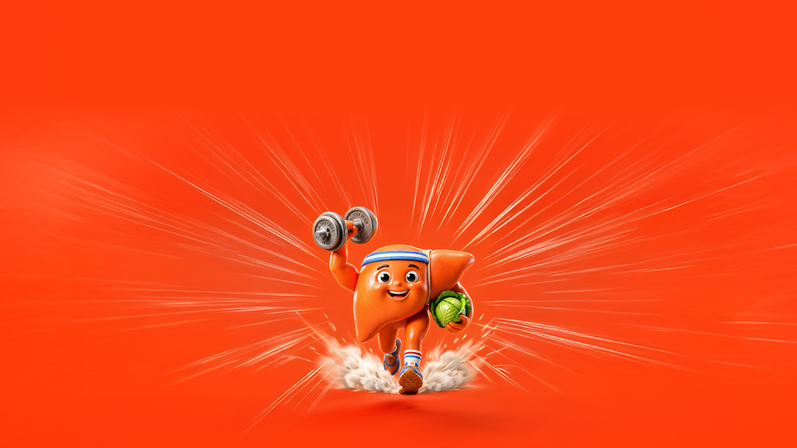
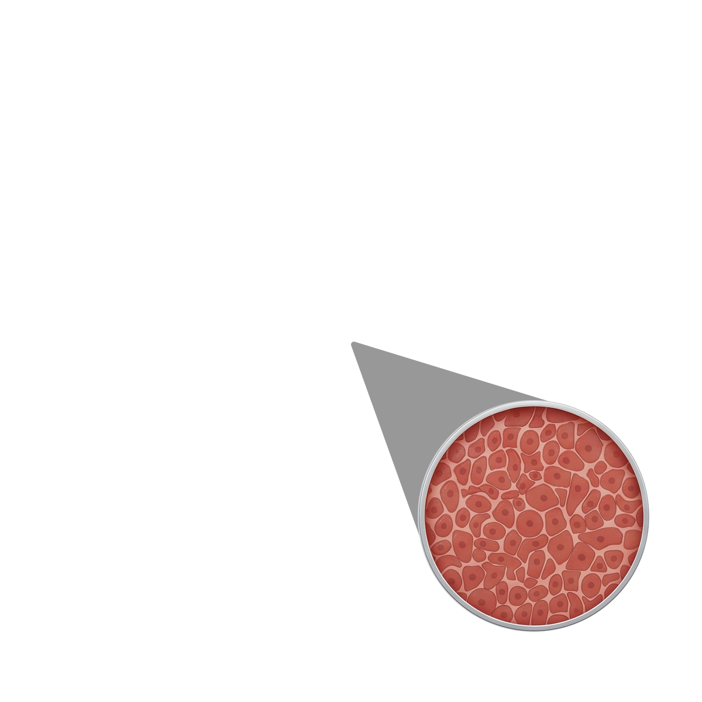
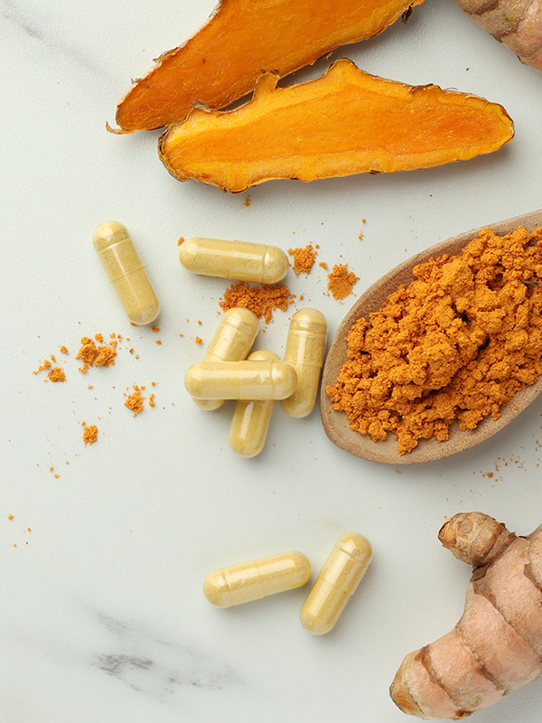
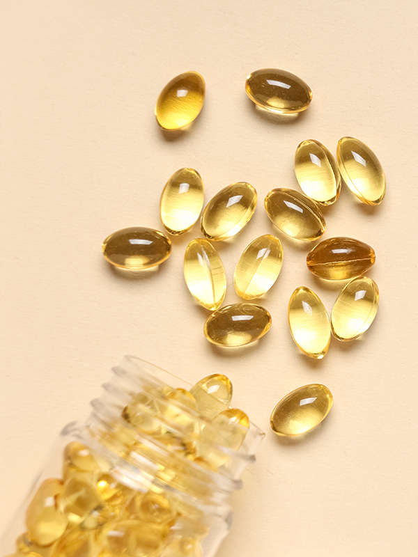

現代人罹患脂肪肝的主因，往往來自於精緻飲食、吃太多、生活壓力大、睡眠不足、少運動等因素。這些不良的生活與飲食習慣會導致血液中的三酸甘油酯過高與肥胖，增加胰島素阻抗，因此即使滴酒不沾，同樣會引發脂肪肝。

大調查結果發表！1/4不知自己有無脂肪肝
脂肪肝發生率約30％，是高血壓、糖尿病的3倍，更是全身健康的「紅色警報」。從睡眠呼吸中止、骨鬆到多種癌症，竟然都跟脂肪肝有關！還好，脂肪肝是可逆的，從數據解密到實戰清單，這份全方位養肝指南，帶你奪回健康主導權。
肝臟怎麼變粉肝？一次看懂脂肪肝變化
脂肪肝並不如想像般「肝臟表面被脂肪包住」，而是肝細胞中有過多脂肪，因此俗稱「肝包油」，台灣小吃中常見的「粉肝」就是有脂肪肝的豬肝。肝臟裡本來就有少量脂肪，一旦超過5%，就是脂肪肝。為什麼健康肝會變粉肝，甚至纖維化、硬化，進而有肝癌風險？

健康肝臟
外觀呈現紅褐色，平滑有彈性，有良好的代謝功能。
8大迷思，醫師一次破解
不喝酒、不覺得累、看起來不胖，脂肪肝也可能找上門？若長期忽視肝臟的沉默警訊，仍可能進展為不可逆的肝臟損傷。肝膽腸胃專科醫師賴佳業，為你破解8個最常見的脂肪肝迷思。
很多人肌肉量低、體脂率高，雖然外表瘦瘦的，但因為長期久坐、愛吃高油高糖的餐點，脂肪容易堆積在腹部，腹部內臟脂肪過多，就容易有脂肪肝。因此要判斷脂肪肝風險，別只盯著體重計，除了關注體脂率，不妨測量腰圍，女性的正常值應低於80公分、男性90公分。
絕對不行。肝臟是「沉默的器官」，沒有痛覺。脂肪肝就像溫水煮青蛙，初期雖然完全沒有感覺，但長期放任不管，肝臟可能經歷反覆發炎與修復的過程，演變成肝纖維化。一旦惡化成肝硬化，不僅會造成不可逆的損害，甚至可能演變成肝癌。
精神好不代表肝臟沒問題。即使肝功能指數（GOT、GPT）飆高到正常值的數倍，患者也常無感、不覺得疲倦。通常要進展到肝纖維化或肝硬化，肝臟的解毒能力變差，才會有明顯的疲倦、噁心感。因此即使每天活力滿點，只要生活型態不佳，同樣潛藏肝臟發炎危機。
抽血檢查肝指數正常，只代表「抽血當下肝臟沒發炎」，不代表沒有脂肪肝。脂肪肝必須透過腹部超音波才能確診。此外，肝指數是浮動的，單次檢查正常不代表肝臟永遠安全。因此，不能因為單次檢查過關就掉以輕心。
可以。脂肪肝在進展到不可逆的肝硬化之前，有機會完全逆轉。一般而言，只要減去體重的5％～10％，肝指數就有望恢復正常；若能減去體重的10％以上，脂肪肝甚至可能完全消失，此時照超音波，肝臟就不會因為油脂多而看起來「霧霧的」。
脂肪肝並非只影響肝臟。有脂肪肝的人，罹患高血壓、高血糖、高血脂的風險會顯著增加；反之，有三高的人也較可能有脂肪肝，兩者是一體兩面、互相影響。此外，肝功能不佳也可能產生肝腎症候群，進一步影響腎臟功能。
若標榜保肝但成分不明確，反而可能增加肝臟代謝負擔。應選擇含有科學實證成分、標示清楚的產品。不過要注意的是，保健品主要是輔助抗氧化與修復肝臟細胞、讓肝臟慢一點發炎，為自己爭取多一點時間進行飲食控制與減重，但無法直接消除細胞裡的脂肪。努力調整生活型態，才最關鍵。
吃得好，肝臟不卡油
想對抗脂肪肝，飲食是重中之重。透過優質蛋白、膳食纖維、植化素、好油脂，可以幫助穩定血糖與腸道健康，並改善脂肪肝。功能醫學營養師呂美寶親自設計一日三餐菜單，即使外食族也不用擔心。按照呂美寶的三餐建議，就算聚餐、加班，只要掌握關鍵原則，也能減少肝臟脂肪堆積。
外食族三餐建議
便利商店可選擇茶葉蛋1～2顆、無糖豆漿1瓶、小根地瓜1/2～1條與生菜沙拉1盒。沙拉醬可選和風醬，酌量使用1/3即可。這樣的組合可提供優質蛋白、膳食纖維與較穩定的碳水來源，有助減少早餐後血糖快速波動，也較不易太快餓。
自助餐店建議選擇有提供雜糧飯的店家，以211餐盤與彩虹飲食原則夾菜。蔬菜占餐盤1/2，可優先選深綠色青菜、十字花科蔬菜如青花菜、菇類，搭配番茄或紅黃甜椒；蛋白質主菜可選清蒸魚、滷豆腐、滷雞腿或白切雞；雜糧飯以半碗到2/3碗份量為主。少選裹粉、油炸、三杯、糖醋、勾芡或滷得很油的菜色。小吃店可選擇燙青菜，加上滷豆腐、豆干或滷蛋，再搭配魚湯、蛤蠣湯或青菜蛋花湯與半碗飯。若想吃麵，可選清湯麵並減少麵量，再另外加點一份青菜與蛋白質食物，避免只吃澱粉或攝取過多醬料。
若有聚餐，不必過度緊張，重點是掌握進食順序與份量。蔬菜與蛋白質先吃，份量足夠，澱粉主食與甜點淺嚐即可。少選油炸勾芡、濃醬、甜飲與酒精，也避免吃太快、吃太撐。若聚餐時間較晚，可先吃少量無調味堅果或無糖豆漿墊胃，避免過餓導致暴食。聚餐前後可安排步行活動，也盡量避免續攤與宵夜，有助減輕肝臟與血糖負擔。
動得對，肝臟不發炎
適度運動可幫助對抗脂肪肝、避免肝臟發炎。肝膽腸胃專科醫師吳柏叡表示，在眾多運動中，首推「中強度有氧運動」，例如快走、慢跑、騎腳踏車、游泳。建議每週至少運動150分鐘，且均分到多天，比一次做完來得好，例如每週運動5天，每次30分鐘，而不是一次運動150分鐘。
除了有氧運動，肝膽腸胃專科醫師賴佳業建議加入阻力運動，例如重訓，以增加肌肉量，進而提升基礎代謝率，更有益於控制體重。
護肝營養素，你都需要嗎？
功能醫學營養師呂美寶表示，減重、均衡飲食、適度運動、充足睡眠等，仍是預防或減緩脂肪肝的第一線主力，額外補充的營養素或保健食品，僅可視為第二線的「輔助」，就是為你的努力加分，但不能取代生活習慣的調整。
需要注意的是，市面標榜「保肝」的保健食品眾多，但機轉大多以「抗發炎」、「抗氧化」或協助代謝調節為主，也就是加強肝臟的自我修復能力，而不是直接剷除或減少脂肪肝。所以不要過度期待多了這些營養素，脂肪肝就會消失無蹤，但可視需求與醫師、營養師討論，從中選擇最適合自己，能幫助你更有效率地提升肝臟整體健康。

薑黃
薑黃的優勢在於抗發炎，當肝臟進入發炎階段，或是肝功能指數（GOT、GPT）較高，薑黃可以輔助性地改善發炎。
小提醒
除了透過保健品額外補充，因為薑黃也是絕佳辛香料，在烹調中使用薑黃，不但更自然、美味，且與油脂一同烹調更有助於吸收。
維生素B群
肝臟是體內的解毒中心，B群幫助肝臟解毒功能運作得更順暢，有助減少有毒物質堆積。
小提醒
B群是水溶性維生素，雖多餘會隨尿液排出，但仍不適宜高劑量攝取，請遵照保健品包裝指示服用。
維生素E
不論美國或歐洲的肝病治療指引，皆有提到維生素E有助改善脂肪性肝炎與部分肝組織變化，尤其是未合併糖尿病、且未進展至肝硬化的患者。維生素E也有抗氧化作用，能減輕肝臟細胞的損傷。
小提醒
維生素E是脂溶性維生素，特別容易在體內累積，所以不能過量補充。出血性中風患者更應謹慎服用，務必諮詢醫師、營養師。
水飛薊素
來自於水飛薊這種植物，治療肝臟發炎的藥物中也含有水飛薊素，有助於穩定細胞膜，保護肝細胞。
小提醒
保健食品與指示藥品中都可能含有水飛薊素，若要自行購買指示藥品，建議先諮詢醫師、藥師或藥劑生，正在服藥者更要確認交互作用。

魚油
對於改善血脂（三酸甘油酯）的效果較明確，當血脂降低，有助於減輕肝內脂肪堆積，同時能抗發炎及改善胰島素阻抗。
小提醒
抗發炎、改善血脂的效果，主要來自魚油中的EPA，但不是所有魚油的EPA含量都一樣，可挑選濃度較高的魚油產品。
早發現早治療！你可以做哪些檢查？
有了脂肪肝，自己可能渾然不覺而放任惡化，因此定期檢查是保護肝臟的關鍵。腹部超音波可以觀察肝臟的脂肪堆積狀況，抽血則可得知肝功能指數（GOT、GPT）是否正常，以了解肝臟是否在發炎中，2種檢查可按照以下原則與頻率安排：
● 40歲以上、肥胖、有代謝症候群、飲酒習慣 → 每年1次超音波
● 單純脂肪肝、無肝指數異常者 → 半年～1年追蹤1次
● 脂肪肝且肝功能指數異常，合併B/C肝或肝硬化 → 每3個月抽血1次，半年1次超音波追蹤
腹部超音波是安全、簡易、快速，人人可做的影像檢查，另有其他精密儀器可以更進一步掌握肝臟健康狀態。